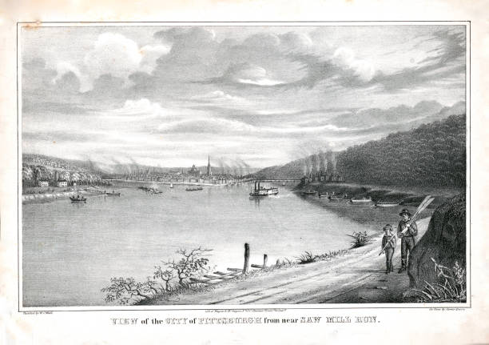
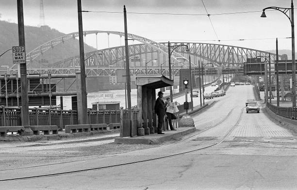
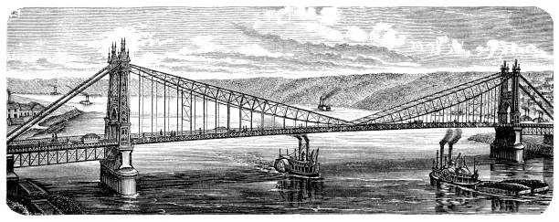
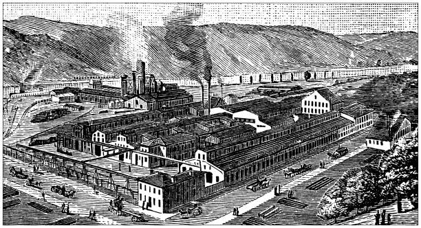

For my archive I chose “Get To the Point!” a collection of maps and images of Pittsburgh’s Point over its 300 year history. The collection of images and summary were constructed by Dr Ted Muller of the University of Pittsburgh’s history department. The archive was posted in 2015 but it holds images dating back to 1758 to 2013. The collection is present in the Hillman Library for visitors to observe. The collection requires prior knowledge about the significance of the city of Pittsburgh, which contextualizes the importance of its location. As the park represents “Pittsburgh's story and the birthplace of our community. It is a gathering place for Pittsburgh's residents, the County, and the Commonwealth for grand civic events, and is a point of pride in our region.”(“Point State Park”, 2025) This history is presented in parallel with The Point, a monument in current day, but it wasn’t always just a monument. It highlights how the heart of Pittsburgh resides with The Point.Allowing for the images and progression to relate to how Pittsburgh came to be the city it is today. The article clearly uses the history of Pittsburgh in relation with The Point to signify its importance. As it was the first part of Pittsburgh to be built up as a fort, and now lays as the “heart of the city”. This theme continues over the document and will be explored further.



Photos of Pittsburgh over it's long history.
The collection visually portrays images of Pittsburgh’s Point over a 300 year period. Beginning in 1758 when a small fort was on the point of the three rivers. This brought the heavy interest of the French settlers to its geographic location. “ which I think is extremely well situated for a Fort, as it has the absolute Command of both Rivers.”(“History of the Point”, 2025) This allowed the rest of the city to develop around The Point. This growth only accelerated in the industrial revolution, bringing the railroad and bustling factories on the riverside nearby. In turn The Point became a bustling market place for Merchants, Craftsman, Bankers, and workers. Then to the Great War and the wave of workers and production brought from the city. Tying the progression of the point, the heart of the city as it also became surrounded by more commercial industry. Then the post war deindustrialization struck causing regression in the city, but the point remains. The city didn't give up even though they “spearheaded the country’s earliest large downtown renewal program after World War II.”(Alberts,1980, p.10) It paid off as in modern day the point’s monument remains and the city has begun its revitalization as a communications and health industry hub. The pictures allow for the summary to have more impact for the viewer. As it brings context to the growth of Pittsburgh, specifically highlighting the point as it’s grown as the hub for commerce.
The archive’s importance and value comes in carefully constructing the progression of the city. It allows for viewers to better understand how Pittsburgh has evolved with the times, and molded itself into a successful city as we see now. With a heavy emphasis on The Point and its representation of the city. The documents side by side with the cities progression and The Points progression as its surroundings change. Again signifying The Point’s unwavering importance as the heart of the city. Many history buffs and researchers would enjoy the archives contents as it really brings an image of growth, decline then resurgence. With students, history researchers, and curious people alike accessing the contents for furthering their knowledge in Pittsburgh. I feel the archive excludes the process of the resurgence of the city. This would help give context to the city's regrowth and how The Point changed with that aspect.

Old steel mill in Pittsburgh
The collection and summary can be used for further understanding of Pittsburgh’s history, and course of evolution. It stands as a reminder of the city's many phases in evolution. This evolution is tied hand and hand with The Point. It stands as the heart and beginning of the city of Pittsburgh. It gives importance to such a mark, and weaves it into the history. The Point represents more than just a monument, a piece of land. It shows the unwavering will of the city and how it, just like The Point., changes and adapts with the world around it. The paper illustrates how a monument stands for more than just its baseline, it takes an identity. It connects with the people and allows us to ask questions about other monuments all around the nation. What do they bring? Do they resonate the same way The Point does? This allows the paper to also connect with knowledge of the city's development and how we can use history to understand. What works with Pittsburgh, can we look back and see what has helped push our city forward. It also raises the question of what is next for the city. With rapid changes how will it impact Pittsburgh.
Old map of Pittsburgh downtown.
generated by Open Fuego
Why make a spark when you can light a fire?